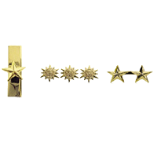
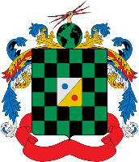

Quiz
Ejercito

Juego
Preguntas

- Himno del Ejército Nacional de Colombia.
- Himno Nacional de Colombia.
- Himno al arma.

“sin más política es, el mundo que nadie espera”
En la escuela militar de suboficiales recién ingresado como alumno de primer nivel, debe cumplir parámetros, reglas y comportamientos que la institución exige, por lo tanto …
En la escuela militar de suboficiales recién ingresado como alumno de primer nivel debe cumplir parámetros, reglas y comportamientos que la institución lo exige por lo tanto…
En la escuela militar de suboficiales recién ingresado como alumno de primer nivel debe cumplir parámetros, reglas y comportamientos que la institución lo exige por lo tanto…
En la escuela militar de suboficiales recién ingresado como alumno de primer nivel debe cumplir parámetros, reglas y comportamientos que la institución lo exige por lo tanto…
En la escuela militar de suboficiales recién ingresado como alumno de primer nivel debe cumplir parámetros, reglas y comportamientos que la institución lo exige por lo tanto…
El cabo tercero Sánchez Trujillo David Andrés, tuvo su ceremonia de ascenso el día 23 de marzo del 2018; por otro lado, el cabo tercero Flores Cazallas Hernán Darío tuvo la ceremonia de ascenso el día 23 de marzo del 2019. De acuerdo a lo anterior